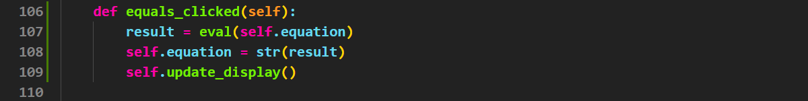

Tutorial 7 - Refine Calculator App#
In this tutorial you will:
make the calculator app perform calculations
In the previous tutorial we created a calculator UI. Now it is time to make it work.
Equals button#
We mention in the previous tutorial that we will use Python’s eval() function to calculate the value of the string equation that our calculator has created. We also did not assign a signal and slot to the equal button. Well it is time address both of these.
Equals signals and slots#
Just like all the other buttons, first we will create the equals_clicked slot.
Go to the bottom of your slots section
Add the code on line 105 and line 106 below.

Now we need to add the signal.
Go to the bottom of the signals method.
Add the code on line 40.

Finally complete the equals slot.
Return to the equals_clicked slot
Replace the
passwith the code from lines 107 to 109 below.

Testing Equals#
Time to run your program and see if it works. At the moment it is very rudimentary, but it will work with simple calculations. So run your calculator and trying a simple equation.
It won’t take you long to see that there are many problems with our simple calculator. The rest of this tutorial is about fixing those problems.
After Clicking Equals#
After we click the equals button, the calculator returns the result of the calculation. That is good. The problem occurs when we click the next button. It’s value gets added to the calculation result on the screen.
If that button is an operator (+, -, / or *) then this is normal operation of a calculator, and that’s ok.
If that button is a number, then that is not how a calculator works. A normal calculator removes the result and starts a new calculation.
How are we going to solve this?
The problem is that the calculator needs to know whether the previous button click was the equals button, that way it know how to respond to our number clicks. To record if the equals button has been clicked, we will use a flag variable.
Flag Variables
A flag variable is a boolean used to indicate when a specific condition has been met in a program. It is typically set to True when an event occurs and reset to False when the condition is no longer valid. Flag variables are commonly used in loops, decision-making, and event handling to control program flow efficiently.
Create Flag Variable#
The first step is creating the flag variable, we need to do this in __init__.
Go to the initialise variables section of the
__init__methodAdd the line of code in line 17 below

Naming Flag Variables
When naming flag variables, it is best to name them as a statement, so their value of True or False makes sense.
Set Flag Variable#
Now we need to set the flag variable. We want to set it to True when the equal button is pressed, but reset it to False if any other button is pressed.
First lets focus on setting the flag to True.
Go to the equals_clicked slot
Add the code in line 108 below
Now to work on when the flag gets set to False, which is every other button. Lets start on button 9.
Go to the nine_clicked slot
Add the code in line 48 below.

Now repeat this for all the other buttons, except the equals button.
Use Flag Variable#
Now that the flag variable is set for each button, time to use it to influence the behaviour of our calculator app.
What we want to do is for each of the number buttons and the decimal button:
check if the previous button was equals
if it was, reset
self.equationto""before appending the number to it.
Again we will start with button 9
Go to the nine_clicked slot
At the top (this is important) of the method add the code in line 48 and line 49.

Again repeat this for all the other numbers and the decimal button.
Testing Flag#
Time to test that the flag works. Launch your app and check what happens after you click the equals button.
Multiple Operators#
The next problem that we have is that our calculator allows the user to enter multiple operators. Is this a problem?
Multiple Operators Planning#
Use your calculator to test the possible combinations of operators. The table below is a summary of the testing.
Operators |
Example |
Result |
Analysis |
Verdict |
|---|---|---|---|---|
|
|
|
This works as the first |
Prevent |
|
|
|
This works as the |
Allow |
|
|
Error raised |
|
Prevent |
|
|
Error raised |
|
Prevent |
|
|
|
This works as the |
Prevent |
|
|
|
This works as the first |
Allow |
|
|
Error raised |
|
Prevent |
|
|
Error raised |
|
Prevent |
|
|
|
This works as the |
Prevent |
|
|
|
This is correct and required as there is no other way to represent this equation |
Allow |
|
|
|
This works since |
Prevent |
|
|
Error raised |
|
Prevent |
|
|
|
This works as the |
Prevent |
|
|
|
This is correct and required as there is no other way to represent this equation |
Allow |
|
|
Error raised |
|
Prevent |
|
|
|
This works since |
Prevent |
Systematic Testing
You will notice with the table above, the testing is being systematic. It first tests all the possible combinations of the + operator, then the - operator etc. Being systematic in your testing makes sure that is tests all possible pathways that your program can take, this improves test coverage and helps to ensure the reliablity of your code.
Looking at the testing table we can determine the behaviour of our calculator when an operation button is clicked. This will be determined by a combination of the last character in the self.equation string and which button has been clicked.
Button |
Last Equation Character |
Action |
|---|---|---|
+ |
|
Do not add |
+ |
|
Add |
- |
Any character |
Add |
x |
|
Do not add |
x |
|
Add |
/ |
|
Do not add |
/ |
|
Add |
This can be distilled down to three simple rules:
for the - button → nothing changes
for the + x and / buttons:
if the last
self.equationcharacter is a digit or.add the symbol.otherwise, do nothing
Multiple Operators Code#
Lets implement these into code.
Go to the multiplied_clicked slot
Add the line 126 below
Make sure that you add and indent to line 127
Code explanation
Looking at line 126 and there are two important tools we are using to manipulate strings — referencing string characters and string methods.
Referencing characters
In Python strings are actually a special type of list, therefore every character is assigned an index. This means that you can refernce characters and slice strings the same way you can refernce elements in a list and slice lists.
The code self.equation[-1] is an example of referencing characters via the index. Indexes can run both backwards, so the index -1 always refers to the last character in a string.
String methods
String methods are built-in functions that you can use to manipulate and work with strings. These is extremely useful since strings comprise much of the data program deal with.
The .isdigit() method checks to see if the string consists of only digits (ie. 0-9). In our code the string we are checking is self.equation[-1] — the last character of the equation string.
Since . is not a character, we needed to add or self.equaltion[-1] = "." to allow operators to be added to a string that ends with .`.
Now repeat the same changes in divide_clicked and add_clicked slots.
Test Multiple Operators#
Finally you need to test that this has solved the problem. Use the summary table above and make sure that all the combinations our code prevents and allows the correct combination of operators.
Operator First#
Launch your calculator and click on the x button. It will raise the error below.
Traceback (most recent call last):
File "d:\GIT\PyQt6-website-tutorials\calculator.py", line 126, in multipy_clicked
if self.equation[-1].isdigit() or self.equation[-1] == ".":
~~~~~~~~~~~~~^^^^
IndexError: string index out of range
You can see that the Traceback points to the line we just added to our code. In correcting our last problem, we have introduced another. Lets fix that.
Operator First Planning#
First we need to work out why this error occurred. The error is IndexError: string index out of range which means that our index `self.equation[-1] doesn’t exist. Why is that?
Looking back at the __init__ method and we see that self.equation = "". This means that when the program starts, the value of self.equation is an empty string. We cannot refer to the last character, because there are no characters.
So we also need to include an exception for self.equation being "" the if statement.
Operator First Code#
To fix the error:
Go to multiply_clicked slot
Add the new
ifstatement in line 126 of the code below.Make sure you add an indent to line 127 and line 128
Code explination
The if statement on line 126 guards against the error we introduced with our previous change. If self.equation is an empty string, then the program will never test the last character.
Make the same changes in divide_clicked and add_clicked slots.
Test Operator First#
Launch your calculator and check that clicking the x button doesn’t cause an error.
Good news, is no error has been raised. Bad news is that the 0 on our calculator has disappeared.
Prevent Blank Display#
The reason the 0 disappears is that we run the update_display method at the end of every slot. This normally isn’t a problem because self.equation has a value in it. But now we have a situation where the user can click a button and the self.equation is still "" when the update_display is called.
This is a simple fix:
Go to the
update_displaymethodAdd the code on line 159 below
Make sure you add an indentation to line 160
Double Decimal#
The next problem is that when you can click on the decimal button twice in a row, and it will display .. which a calculator should not do.
So lets look at solving that problem.
Double Decimal Planning#
The error occurs because the no number contains two decimal points, but self.equation can contain multiple decimal points, as long as each number only has one. We need to prevent a decimal point from being added to a number, if that number already has a decimal point. Therefore we need to identify each number in self.equation.
Fortunately there is a simple way to do this. Each number in self.equation is separated by an operator. So we can use a flag system, similar to our double equals solution, which will record if there is a decimal point in the current number. Clicking the decimal button will set it to True and then clicking an operator will set it to False.
equals_clicked
First we need to create the flag variable.
Go to the
__init__methodMove to the initialise variables section
Add the code from line 18 below.
We need to change the decimal_clicked slot so it sets the self.number_has_decimal to True when clicked.
Go to the decimal_clicked slot
Add line 123 in the code below
Now we need prevent a decimal being added to self.equation when self.number_has_decimal is True.
Still in the decimal_clicked slot
Add the code in line 122 below
Make sure you increase the indent of line 123 and line 124
Finally we need to adjust the operators slots to make flag False when they are clicked.
Go to the multipy_clicked slot
Add the code in line 132
Note that the code needs to go after the code that changes self.equation and at the same indentation level.
Add the same code to the:
divide_clicked slot
add_clicked slot
subtract_clicked slot
equals_clicked slot
Double Decimal Testing#
Launch your calculator and test that the decimal button behaves the way you want it to.
Leading Zeroes#
In our calculator zero works like any other number, but it shouldn’t. We can create numbers that have leading zeroes. We need to stop this from happening.
Leading Zeroes Planning#
Lets look at when we want prevent 0 from being added to self.equation.
Possible equation |
Valid |
When detect |
How to detect |
|---|---|---|---|
09 |
No |
|
self.equation = “” |
909 |
Yes |
|
|
+0 |
Yes |
|
|
+09 |
No |
digit clicked |
|
From this table we can create two simple rules:
When the zero button is clicked:
if
self.equation = ""don’t add0
When a digit button is clicked:
if
self.equation[-1] = 0 and self.equation[-2] in ["+", "-", "*" "/"]remove the0atself.equation[-1].
Ok let’s put that into code:
Leading Zeroes Code#
Lets deal with the first rule
Go to the zero_clicked slot
Add the code in line 115
Increase the indent for line 116
Now the second rule
Go to the nine_clicked slot
Add the code in lines 52 to 54 below make sure you match the indentation.
Code explanation
self.equation = self.equation[:-1] uses string slicing to remove the last character in the self.equation string
Leading Zeroes Testing#
Launch your calculator and check that the zero button behaves as you intended.
Divide by Zero#
On other calculators, dividing by zero presents a error message. In our calculator it crashes the program. We need to change that.
Divide by Zero Planning#
Since dividing by zero is mathematically impossible, Python will raise a ZeroDivisionError: division by zero error. We can use this to identify when this problem occurs then deal with it using Python’s try-except block.
Flag Variables
In Python, a try-except block is used to handle errors (exceptions) and prevent a program from crashing. The try block contains the code that might raise an exception, and the except block catches and handles the error if it occurs. This allows the program to continue running instead of terminating unexpectedly.
We can use try-except when evaluate self.equation to catch and deal with any ZeroDivisionError exceptions.
Divide by Zero Code#
So let’s put that plan to code.
Let capture the ZeroDivisionError exception and change result so the calculator displays a message when the screen is updated
Go to the equals_clicked slot
Replace the current line 163 with the code from lines 163 to 166
This now presents a problem, that self.equation is now words. Our calculator is not designed to deal with that, so we need to return self.equation to a useable value after updating the screen.
At the bottom of the equals_clicked slot
Add the code from lines 170 and 171 below.
Divide by Zero Testing#
Launch your calculator and then attempt to divide by zero.